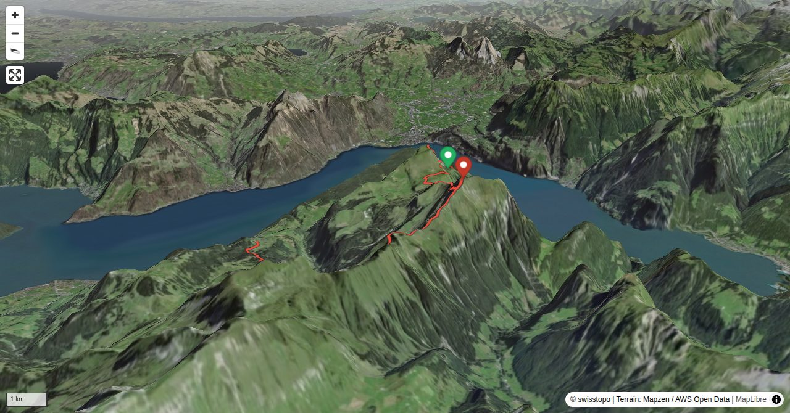

From Flüelen they look like two almost identical pictures of the same mountain: the Bauenstöcke. From a close range, however, Niderbauen Chulm (formerly called «Seelisbergerkulm») and Oberbauenstock («Baberg») turn out to be totally different characters, in terms of hiking as well as the landscape, which makes the traverse even more interesting. This is a Lake Lucerne tour par excellence, due to the central position directly above the lake.
Quick Facts
| Summit elevation | 2117 m |
|---|---|
| Difficulty | SAC T4+ Check the route notes below for terrain and commitment level. Guide |
| Trailhead | Alp Weid (UR) |
| Distance | 15.5 km (out-and-back) |
| Total ascent | ~1336 m |
| Elevation range | 1251-2117 m |
| Route sources | SAC Route Portal |
Photos


Route Map & Elevation
i
i
sac_scale (precise T1–T6) with
swissTLM3D Wanderwegart
fallback where OSM is silent (coarser T2/T3 and T4+ buckets).
Coverage: OSM 86.0% · swisstopo 12.3% · unknown 1.5%.Elevations computed from the inlined GPX track (SwissTopo height API).
Loading forecast…
3D Terrain View

Route Details
Traverse from Niderbauen Chulm to Stockhütte
- Alp Weid – Niderbauen Chulm 1 h 45 min. Niderbauen Chulm – Oberbauenstock 2 h 15 min. Oberbauenstock – Stockhütte 2 h 45 min.
Terrain & safety
On the ascent to Oberbauenstock there is a steep schrofen and rock face with scrambling passages (T4+, fixed ropes), followed by a sometimes precipitous grass and schrofen ridge (T4). The ascent to Niderbauen Chulm is easier: T3+ with a few protected passages, a ladder and a very steep grassy slope. The orientation is unproblematic, but the tour is not for wet days.
Source: SAC Route Portal
Getting There & Back
Start: Alp Weid (UR) (1289 m)
Directions from to Alp Weid (UR)
End: Stockhütte (1277 m)
Directions from Stockhütte back to
Field Reference
| Trailhead | Alp Weid (UR) | 46.95220, 8.56990 |
|---|---|---|
| Summit | Oberbauenstock (2117 m) | 46.92787, 8.54428 |
Coordinates are WGS84 decimal degrees (lat, lon). Emergency: 112 (general) or 1414 (Rega air rescue). Page URL: